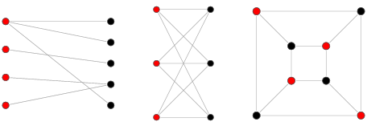
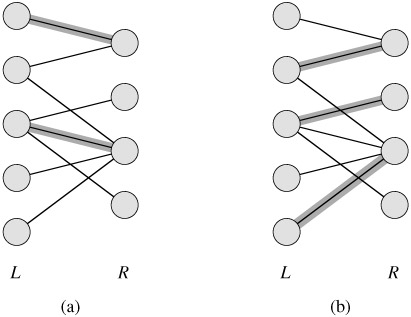
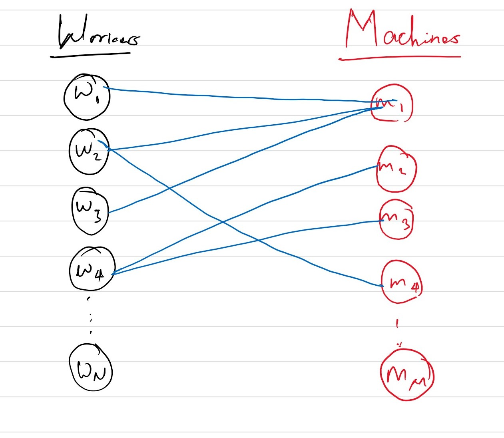
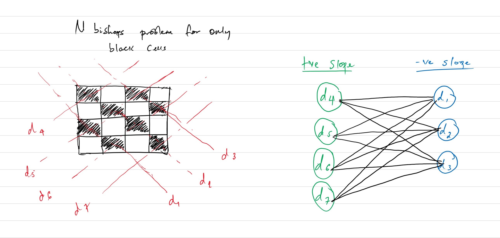

Algorithms
Bipartite matching, Network flow algorithms
Bipartite matching
Undirected graphs whose vertices can be colored with exactly two colors in such a way that every edge in the graph connects vertices of alternating colors are known as Bipartite graphs.
A 'bipartite matching' is a set of edges in a bipartite graph that have exclusive ownership of the pair of vertices each edge in the matching connects. For example, the highlighted edges in the two graphs above are two possible matching sets.
Most problems associated with bipartite matching boils down to two goals. The first goal is to find the maximal matching. This is simly the largest matching set. The second goal is to find the minimum vertex cover which is the minimum set of vertices that spans every edge in the graph.
A bipartite graph is said to have a perfect matching if every colored vertex can be matched to some uncolored vertex and vice versa. There are two main pre-requisites for a perfect matching to exist. 1. The number of colored and uncolored vertices must be the same, and 2. Each connected component of a the bipartite graph must be a complete bipartite graph.
The interesting thing about bipartite matching problems is the fact that they can be reduced to network flow problems. To convert a bipartite graph into a Network:
- Introduce a source vertex & add a directed edge from the source to every colored vertex
- Introduce a sink vertex and add a directed edge from every uncolored vertex to the sink
- Change every undirected edge in the bipartite graph to a directed edge going from colored vertices to uncolored vertices
- Assign a capacity of 1 to each vertex in the network.
Solving for the maximal matching of the original bipartite graph is equivalent to solving for the maximum flow of the corresponding network. Once the algorithm finds the maximal flow of the corresponding network, any edge in the resulting network that has positive flow and is in the original bipartite graph will also be in the matching set. Similarly, finding the minimum vertex cover for bipartite graphs is equivalent to finding the min-cut set of the corresponding network.
This is important because a lot of combinatorics problems can be represented as bipartite graphs and solved by matching algorithms. So by reducing matching algorithms to network flow algorithms, it is possible to efficiently solve complex combinatorics problems.
Assignment problems are one class of problems that can be solved via bipartite matching. Assume there are 'N' workers, and 'M' machines. Not all of the 'N' workers know how to operate every machine, and not every machine can be operated by all employees. The goal is to assign workers to machines & minimize the overall number of idle machines and employees while doing so.
Let N colored vertices represent the workers, and M uncolored vertices represent the machines. There is an edge between two alternating colored vertices v and w only if employee v knows how to operate machine w.
For the above bipartite graph, an edge will be in a matching set M only if its two vertices are not be shared by any other edge in the matching. In other words, no other employee will use machine 'w' and no other machine will be operated by employee 'v'.
Another problem that can efficiently be solved via bipartite matching is the N-Bishops problem. The goal is to find the maximum number of bishops that can be placed on an NxN chessboard without any two bishop pieces attacking each other.
This problem can be split into two sub problems: One for bishops that move along dimensions that span only white cells and one for bishops move on dimensions that span black cells. This is because bishops in alternating colored cells will never attack each other. So these two problems can be solved independently.
A cell that a bishop is placed on is an intersection of two diagonal lines in which one has positive slope and the other has negative slope. Bishops will only attack each other if they share either one of the slopped dimensions. So the goal is to place bishops in such a way that they are placed in cells that don't share a positive slopped or negative slopped line.
The colored vertices in the bipartite graph can represent the positive slopped dimensions that span the board, and uncolored vertices can represent the negative slopped dimensions that span the board. There is an edge between alternating colored vertices to represent a cell. So if there is an edge between v and w, that represents the cell formed by the intersection of vertical dimension v and horizontal dimension w.
Placing an edge in a matching for the bipartite graph corresponds to placing rooks on a cell. Placing rooks in cells(edges) that are in a matching will guarantee that they won't attach each other since those edges do not share either dimension. So the maximum matching in this case will represent the maximum number of "safe" cells to place bishops on.
Another way to solve the problem would be to rotate the board by 45 degrees. By doing so, bishops in this new rotated board will behave as rooks. Solving this version of the problem via bipartite matching may require less overhead.
The only caveat with this approach is that there are certain invalid cells in the newly rotated board. Bishops can only be placed in the cells spanning the shaded diamond region of the rotated rectangle. To account for this, when constructing the bipartite graph for the rotated board, if a cell formed by vertices v and w is invalid, do not add an edge in the bipartite graph.
The only caveat with this approach is that there are certain invalid cells in the newly rotated board. Bishops can only be placed in the cells spanning the shaded diamond region of the rotated rectangle. To account for this, when constructing the bipartite graph for the rotated board, if a cell formed by vertices v and w is invalid, do not add an edge in the bipartite graph.
The N Queens problem, which is a slightly more complicated version of the N bishops problem, can simillarly be solved via bipartite matching. The key thing here is the fact that a queen is essentially a combination of a rook & a bishop. So, the problem can be divided into a bishop sub problem and a rook sub-problem. These two subproblems can be combined after each one is solved independently. When combining the solutions to the two sub-problems, the important thing to remember is that cells that are safe for both rooks and bishops are also safe for queens as well.